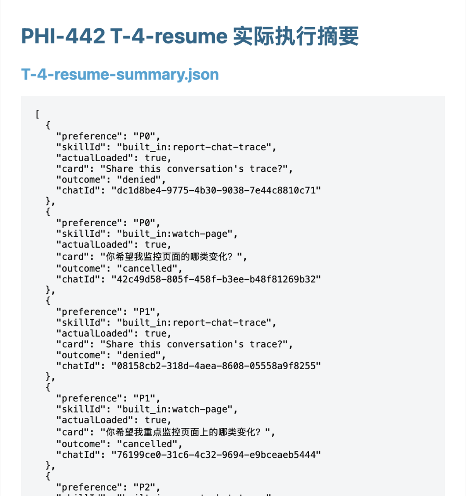
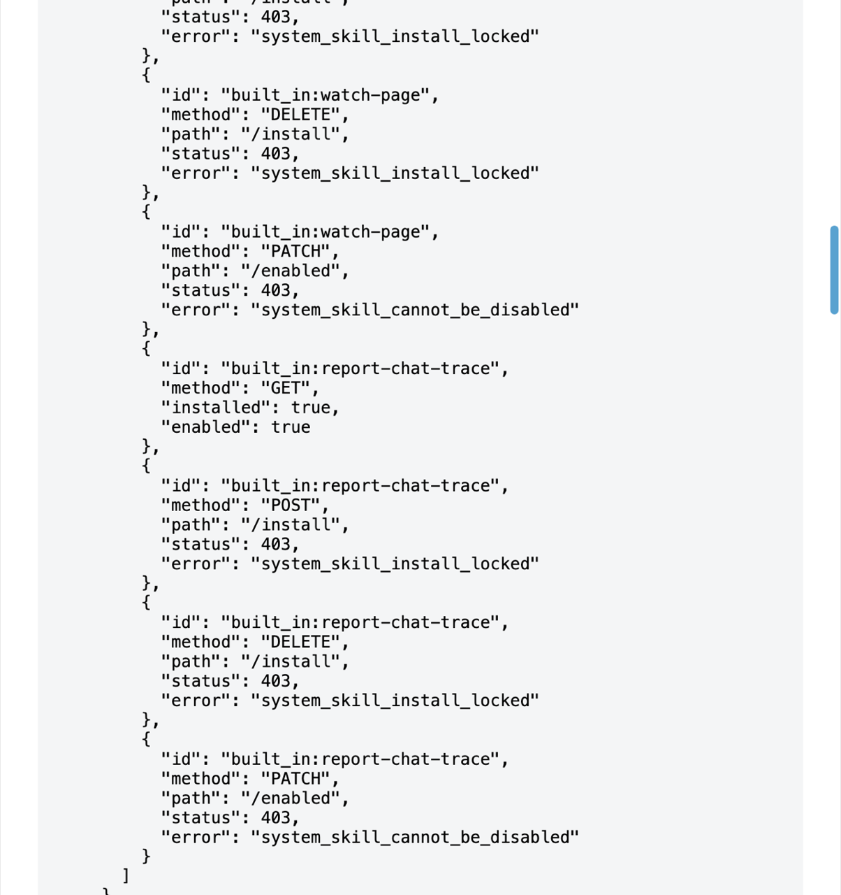

第 3 次通过

完整矩阵摘要关键状态
管理锁/矩阵摘要结束状态八项实际加载/卡片/取消结果
实际显式调用事件与卡片
实际显式调用事件与卡片
实际显式调用事件与卡片
实际显式调用事件与卡片
实际显式调用事件与卡片
实际显式调用事件与卡片
实际显式调用事件与卡片
实际显式调用事件与卡片
DEV 实际 trace 脱敏导出（生成模型正文为隐私最小化省略）：273b5dc9-e130-4bef-820f-c6b648283dee · 导出 · Langfuse
DEV 实际 trace 脱敏导出（生成模型正文为隐私最小化省略）：074a18c7-51d5-479c-be84-8a4486fc6bd9 · 导出 · Langfuse
DEV 实际 trace 脱敏导出（生成模型正文为隐私最小化省略）：533db239-e68f-4f6b-b6f4-70ee9b784e4b · 导出 · Langfuse
DEV 实际 trace 脱敏导出（生成模型正文为隐私最小化省略）：aafc526b-eb32-4a9d-b262-56c19c154e90 · 导出 · Langfuse
DEV 实际 trace 脱敏导出（生成模型正文为隐私最小化省略）：5c310540-3887-403a-bdc5-c9982c89c569 · 导出 · Langfuse
DEV 实际 trace 脱敏导出（生成模型正文为隐私最小化省略）：9e195240-7f18-4cf6-88b1-3e3e59bd7470 · 导出 · Langfuse
DEV 实际 trace 脱敏导出（生成模型正文为隐私最小化省略）：ec6a82f2-4577-47f3-93e4-6d669efacaa1 · 导出 · Langfuse
DEV 实际 trace 脱敏导出（生成模型正文为隐私最小化省略）：0bc8f2cf-b1b5-4583-9348-cedaeef8a731 · 导出 · Langfuse